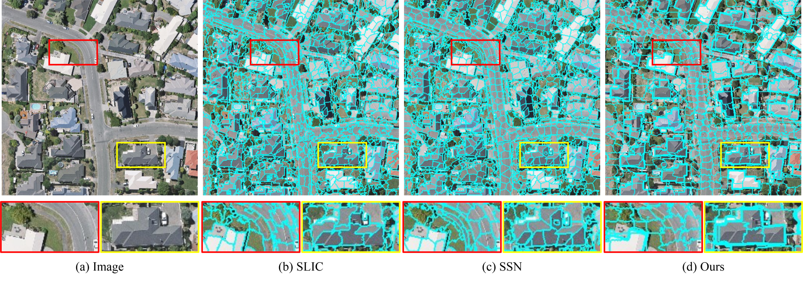
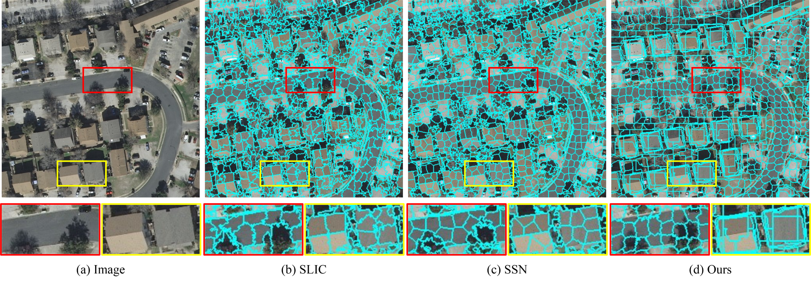
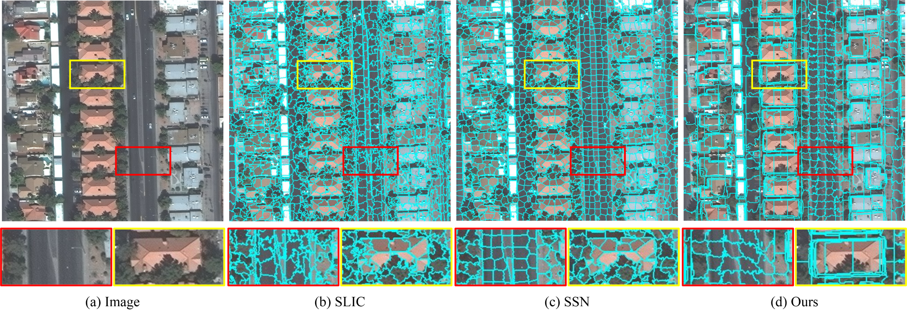

Most urban applications necessitate building footprints in the form of concise vector graphics with sharp boundaries rather than pixel-wise raster images. This need contrasts with the majority of existing methods, which typically generate over-smoothed footprint polygons. Editing these automatically produced polygons can be inefficient, if not more time-consuming than manual digitization. This paper introduces a semi-automatic approach for building footprint extraction through semantically-sensitive superpixels and neural graph networks. Drawing inspiration from object-based classification techniques, we first learn to generate superpixels that are not only boundary-preserving but also semantically-sensitive. The superpixels respond exclusively to building boundaries rather than other natural objects, while simultaneously producing semantic segmentation of the buildings. These intermediate superpixel representations can be naturally considered as nodes within a graph. Consequently, graph neural networks are employed to model the global interactions among all superpixels and enhance the representativeness of node features for building segmentation, which also enables efficient editing of segmentation results. Classical approaches are utilized to extract and regularize boundaries for the vectorized building footprints. Utilizing minimal clicks and straightforward strokes, we efficiently accomplish accurate segmentation outcomes, eliminating the necessity for editing polygon vertices. Our proposed approach demonstrates superior precision and efficacy, as validated by experimental assessments on various public benchmark datasets. We observe a 10% enhancement in the metric for superpixel clustering and an 8% increment in vector graphics evaluation, when compared with established techniques. Additionally, we have devised an optimized and sophisticated pipeline for interactive editing, poised to further augment the overall quality of the results.
Superpixel segmentation results on WHU dataset:
|  |
Superpixel segmentation results on INRIA dataset:
|  |
Superpixel segmentation results on SpaceNet-Vegas dataset:
|  |
Operations of interactive editing:
The video demonstration is also available in Bilibili.
This work was supported in part by the National Natural Science Foundation of China (Project No. 42230102, 42071355, 41871291).